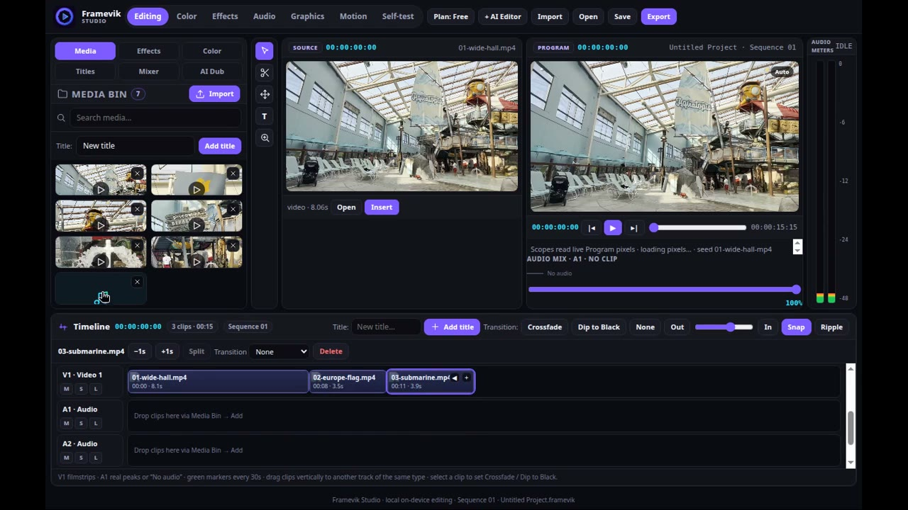

Framevik Studio A professional video editor, created from a single sentence.
Designed and built with CODREN (codren.ai) and Meta AI during the Meta Global AI Developer Hackathon, October 26 – November 4, 2026.
Desktop app for Mac & Windows — Framevik Studio (Electron)

Demo
Three minutes, four products, one engine
The official hackathon demo: CODREN receives a single sentence and starts building; Framevik Studio edits real footage; and the Meta AI experiences inside Briovix and Spicey close the story.
The editor
Built for editors
A dense, professional non-linear editor that works the way editors work — every function below was verified in the running app or on the exported file itself.
A cut stays cut
A multi-track timeline where every clip carries its source in-point. Split a clip and the second part plays from the cut point — in playback, in export, and after reopening the project.
Dual monitors, real video
Source and Program monitors play the real video, with sound, synced to the playhead — at each clip's real duration, never a fake one.
Trim, ripple, speed
Precise trimming and ripple edits, per-clip speed from 25% to 400%, and In/Out marking on the ruler so Export renders only the range you chose.
A real color page
12 cinematic looks and Lumetri-style controls, with four scopes — Waveform, RGB Parade, Vectorscope, Histogram — driven by the actual frame.
Effects that render
Chroma Key, Gaussian Blur, Sharpen, Halation and Bass — applied by dragging onto a clip and measured inside the exported file, not just previewed.
Styled titles
Fully styled titles — text, color and position — composed into the export exactly as designed.
True crossfades
Crossfade transitions render in the exported file as a genuine two-picture blend, pixel-measured from full outgoing to full incoming.
Export with audio
Export produces a real file, picture and sound together — verified by measuring the exported file itself, audio track included.
Projects that persist
Close the app and reopen it: the project, clips and cuts are still there. And a new project starts truly empty, under the name you give it.
Inside the app
The AI Editor
Framevik carries a scoped AI editing assistant that reads the project's current state with every message — and does editing work only.
Two ways to work
- From zero — give it a brief and it builds the edit: imports, cuts, titles, export.
- Handoff — "I've done it up to here, you continue" — it picks up a human's halfway edit and finishes the job.
- Scoped, on purpose — it applies steps to the current project and refuses questions that aren't editing jobs.
- Any language in — briefs are understood in the editor's own words, Albanian included; rendering stays local, reasoning runs through the Meta-powered layer.
Reference Match
Attach a reference photo or video and Framevik matches its color and style as genuine Lumetri values — not a baked-in filter.
How it was accepted
Verified, not promised
Nothing in Framevik was accepted from a builder's summary. Acceptance meant measurement: in the running app, on its in-app Self-test screen, or on the exported file itself.
Measured, not asserted
- Split and trim keep exact source points — verified numerically.
- Effects measured in the exported file: blur, sharpen, halation, bass.
- Export audio measured against its source, level for level.
- The export crossfade measured as a true blend, frame weights and all.
Honest limits, stated
- The Program monitor preview doesn't blend crossfades yet — the export does.
- Imported media is re-linked, not copied into the app; after a reopen, a clip keeps its place and thumbnail and is re-imported once to play again.
- No feature is listed here that wasn't measured.
What's next
"Framevik was created inside this competition — and it does not end with the competition. It continues as a real product, and a real business, built to be used by working editors."